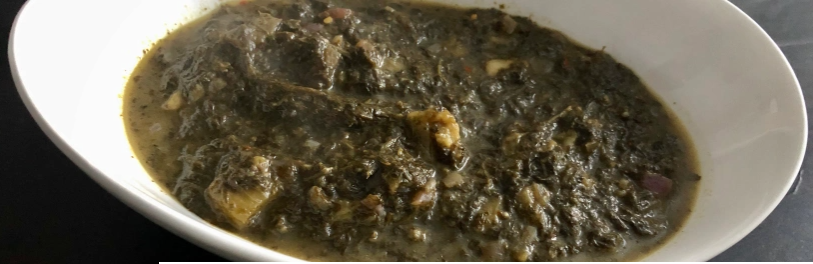

Ngai Ngai and Solo

Ngai ngai is the Lingala word for roselle . Ngai means sour in Lingala, so ngai ngai can literally translate into “sour sour”.
Specie of hibiscus, roselle leaves known for their sourness are mostly grown in tropical or subtropical part of the world,
like West and Central Africa.
Ingredients
- 800 g of frozen roselle or sorrel Leaves
- 1 eggplant
- 1 diced red onion
- ¼ cup of onion purée
- 1 teaspoon of chili flakes
- 1 vegetable stock cube (Optional)
- Salt
- Pepper
Steps
- Defrost the frozen leaves overnight in the fridge.
- Wash the eggplant then peel off its skin. Cut it into cubes and set aside.
- In a pan heat about 3 tablespoons of oil then sauté the diced red onion for 2-3 min until the onion turns soft.
- Add eggplant and sauté for 3-4 min before adding the roselle leaves and the onion purée. Season with chili flakes, stock cube, salt and pepper.
- Pour in one (1) cup of water and stir. Turn the heat to low and cover for 15 min.
- Turn off the heat and serve.